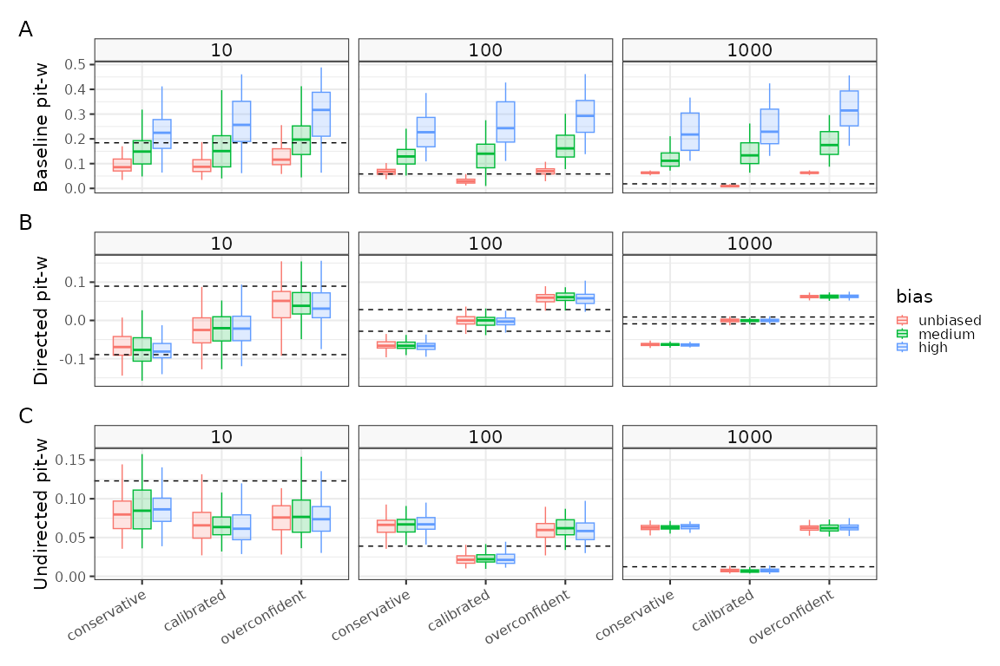
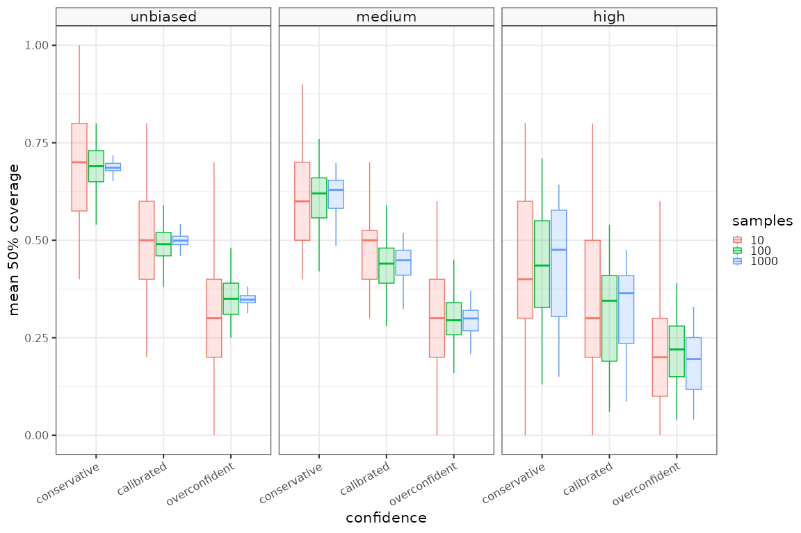

Testing for bias, dispersion miscalibration and skill spread decoupling
sample-sizes-and-power.Rmd
# library(pitw)
devtools::load_all()
#> ℹ Loading pitw
library(tidyverse)
#> ── Attaching core tidyverse packages ──────────────────────── tidyverse 2.0.0 ──
#> ✔ dplyr 1.2.1 ✔ readr 2.2.0
#> ✔ forcats 1.0.1 ✔ stringr 1.6.0
#> ✔ ggplot2 4.0.4 ✔ tibble 3.3.1
#> ✔ lubridate 1.9.5 ✔ tidyr 1.3.2
#> ✔ purrr 1.2.2
#> ── Conflicts ────────────────────────────────────────── tidyverse_conflicts() ──
#> ✖ readr::edition_get() masks testthat::edition_get()
#> ✖ dplyr::filter() masks stats::filter()
#> ✖ dplyr::lag() masks stats::lag()
#> ✖ readr::local_edition() masks testthat::local_edition()
#> ℹ Use the conflicted package (<http://conflicted.r-lib.org/>) to force all conflicts to become errors
.gg_pedantic(size = 0.5)
#> Warning: The requested font(s): [Roboto], are not present on the system. Alternatives will be used.
#> This warning is displayed once per session.
fig_dir = here::here("vignettes", "main", "fig")
set.seed(1001)This vignette is the reference for Figures 2 and 3 of the paper. It asks the practical question that follows once the metrics have null distributions: how many predictions do you need before a test can see anything?
Two simulations answer it from different directions.
| Simulation 1 (Figure 2) | Simulation 2 (Figure 3) | |
|---|---|---|
| Question | do the metrics separate known failures at realistic ? | how does each test’s power build with ? |
| Design | grid of dispersion calibration and bias | 4 named scenarios swept over |
| 10, 100, 1000 | 10 log-spaced values from 10 to 1000 | |
| Replicates | 100 per cell | 250 per point |
| Display | boxplots against critical values | median and 95% range against critical value |
Throughout, predictive distributions are normal and the dashed lines
are the analytical 5% critical values from
vignette("significance-testing"), evaluated at the relevant
.
A metric above its dashed line is a rejection; how far the bulk
of the distribution sits above it is the power.
The paper describes both figures in more detail. The setup below is the specification they refer back to.
1. Separation at fixed sample sizes (Figure 2)
The first simulation crosses the two failure modes that the adjustment is meant to separate, at three sample sizes.
| Factor | Levels |
|---|---|
| dispersion calibration | (overconfident), (calibrated), (conservative) |
| bias | (unbiased), (medium), (high) |
| predictions per estimator | 10, 100, 1000 |
| replicate estimators | 100 per cell |
Two details matter for interpretation. The error scale is itself redrawn log-uniformly on for each replicate, with the claimed scale set to calibration — so the calibration ratio is held at its nominal level while the absolute scale varies, and nothing can depend on the units. And throughout, so every prediction from a given estimator claims the same width: spread–error decoupling is deliberately excluded here and appears only in Simulation 2.
Bias is expressed in units of , so “high” bias is a one-standard-deviation displacement — large, but not absurd for a real forecaster.
# Simulation setup
bias_limit = 1
conf_range = 2
runs = 100
variability = 0 # this is a dispersion measure
config = tidyr::crossing(
calibration = c(1/1.5, 1, 1.5),
bias_location = c(0, 0.5, 1) * bias_limit,
samples = c(10,100,1000),
run = 1:runs
) %>%
dplyr::group_by(calibration, bias_location, samples) %>%
dplyr::mutate(
true_value = 0,
bias_dist = "norm",
bias_scale = exp(runif(runs, -log(conf_range), log(conf_range))),
sharpness_dist = "lnorm4",
sharpness_location = bias_scale * calibration,
sharpness_scale = variability
)
sim = config %>% generate_simulation()
#> interfacer: development mode active (test environment).
#> This message is displayed once every 8 hours.
#> Warning: unexpected groups in the return value of generate_simulation(...):
#> observed: calibration+bias_location+samples+run+bias_dist+bias_scale+sharpness_dist+sharpness_location+sharpness_scale+link+dist+run_id+adjust
#> expected: <any>+dist+link+calibration+adjust
#> Warning: ireturn validation did not pass without changing the value.
scores = sim %>% prediction_scores()
scores = scores %>%
mutate(
confidence = case_when(
calibration < 1 ~ "overconfident",
calibration > 1 ~ "conservative",
TRUE ~ "calibrated"
) %>%
factor(levels = c("conservative", "calibrated", "overconfident")),
bias = case_when(
bias_location == 0.5 ~ "medium",
bias_location == 1 ~ "high",
TRUE ~ "unbiased"
) %>%
factor(levels = c( "unbiased", "medium", "high")),
samples = as.factor(samples)
)
crit_b = pitw::b_pit_significance(NA, c(10,100,1000))
plot1a = ggplot(scores, aes(y=B_pit, x = confidence, colour= bias, fill = bias))+
geom_boxplot(outliers=FALSE, alpha = 0.2)+
geom_hline(data = crit_b, aes(yintercept = critical_0.05), linetype="dashed")+
facet_wrap(~ n_predictions)+
ylab("Baseline pit-w")+
xlab(NULL)
crit_d = pitw::d_pit_significance(NA, c(10,100,1000))
plot1b = ggplot(scores, aes(y=D_pit, x = confidence, colour= bias, fill = bias))+
geom_boxplot(outliers=FALSE, alpha = 0.2)+
geom_hline(data = crit_d, aes(yintercept = critical_0.05), linetype="dashed")+
geom_hline(data = crit_d, aes(yintercept = -critical_0.05), linetype="dashed")+
facet_wrap(~ n_predictions)+
ylab("Directed pit-w")+
xlab(NULL)
crit_u = pitw::u_pit_significance(NA, c(10,100,1000))
plot1c = ggplot(scores, aes(y=U_pit, x = confidence, colour= bias, fill = bias))+
geom_boxplot(outliers=FALSE, alpha = 0.2)+
geom_hline(data = crit_u, aes(yintercept = critical_0.05), linetype="dashed")+
facet_wrap(~ n_predictions)+
ylab("Undirected pit-w")+
xlab(NULL)
plot1 = plot1a+plot1b+plot1c+patchwork::plot_annotation(tag_levels = "A")+patchwork::plot_layout(guides = "collect",axes="collect_x", ncol=1)
.gg_save_as(
plot1,
file.path(fig_dir, "fig2-critical-limits"),
size = std_size$two_third,
formats = c("pdf", "eps")
)
Reading Figure 2, panel by panel. Each panel is one sample size; within it, boxes are grouped by true dispersion calibration and coloured by bias.
Panel A, . The baseline metric responds to both failures at once. Boxes rise with bias (colour) and away from the calibrated centre group, so a rejection is informative only in the weakest sense: something is wrong. At the critical value is high enough that only the grossest failures clear it; by almost everything does, including combinations that are only mildly miscalibrated.
Panel B, . Two dashed lines, because the directed test is signed and two-sided. The colour groups now sit on top of one another: bias moves the boxes hardly at all, which is the bias invariance of Figure 1 shown as a distribution rather than a scatter. What separates the boxes is dispersion calibration, and it separates them by sign — conservative below zero, overconfident above.
Panel C, . The undirected adjusted metric is also flat in colour, and like it is a distance so only the upper critical value applies. It separates calibrated from miscalibrated but, unlike panel B, cannot say which direction.
The practical message is in the leftmost panel: at the boxes for different calibration levels overlap heavily and sit largely below their critical values. Ten predictions is not enough to diagnose anything but a gross failure. By the groups are cleanly separated, which is the sample size the paper recommends as a working minimum.
For comparison, the two conventional summaries over the same simulation:
ggplot(scores, aes(y=mean_coverage.0.5, x = confidence, colour= samples, fill = samples))+
geom_boxplot(outliers=FALSE, alpha = 0.2)+
facet_wrap(~ bias)+
ylab("mean 50% coverage")
ggplot(scores, aes(y=mean_crps, x = confidence, colour= samples, fill = samples))+
geom_boxplot(outliers=FALSE, alpha = 0.2)+
facet_wrap(~ bias)+
ylab("mean CRPS") Coverage is ordered correctly by dispersion calibration but is
insensitive to sample size in its central tendency — more data narrows
the boxes without moving them — and has no reference line to test
against. Mean CRPS is ordered mainly by bias, as in Figure 1 panel A.
Neither supports a decision rule.
Coverage is ordered correctly by dispersion calibration but is
insensitive to sample size in its central tendency — more data narrows
the boxes without moving them — and has no reference line to test
against. Mean CRPS is ordered mainly by bias, as in Figure 1 panel A.
Neither supports a decision rule.
2. Power against sample size (Figure 3)
The second simulation replaces the grid with four named scenarios, each a single well-defined failure mode, and sweeps the number of predictions continuously. This is the figure to use when choosing .
| Scenario | Should be detected by | |||
|---|---|---|---|---|
| unbiased; calibrated | 0 | 1 | 0 | nothing — this is the null |
| biased; calibrated | 1 | 1 | 0 | only |
| unbiased; overconfident | 0 | 0 | and | |
| unbiased; calibrated; decoupled | 0 | 1 | 1 | , weakly |
Here the error scale is fixed at rather than redrawn, so the only thing varying along each curve is . Sample sizes are the 10 log-spaced values from 10 to 1000, with 250 replicate estimators at each; the lines are medians and the ribbons the central 95% of replicates.
The critical-value curves are evaluated on a finer grid of 100 sample sizes so that they render as smooth decays rather than as segments.
# Second simulation setup
# N.B. overwrites config and scores from above
bias_limit = 1
conf_range = 2
runs = 250
variability = 0 # this is a dispersion measure
config = tidyr::crossing(
samples = floor(10^seq(1,3,length.out=10)),
run = 1:runs,
tidyr::nesting(
panel = forcats::as_factor(c("unbiased; calibrated", "biased; calibrated","unbiased; overconfident", "unbiased; calibrated; decoupled")),
bias_location = c(0,1,0, 0),
calibration = c(1, 1, 2/3, 1),
sharpness_scale = c(0,0,0,1),
)
) %>%
dplyr::mutate(
true_value = 0,
bias_dist = "norm",
bias_scale = 1, #exp(runif(runs, -log(conf_range), log(conf_range))),
sharpness_dist = "lnorm4",
sharpness_location = bias_scale * calibration,
`(σₑ/σₛ)` = forcats::as_factor(sprintf("%0.2f",calibration))
) %>%
dplyr::group_by(calibration, `(σₑ/σₛ)`, panel, samples)
sim = config %>% generate_simulation()
#> Warning: unexpected groups in the return value of generate_simulation(...):
#> observed: samples+run+panel+bias_location+calibration+sharpness_scale+bias_dist+bias_scale+sharpness_dist+sharpness_location+(σₑ/σₛ)+link+dist+run_id+adjust
#> expected: <any>+dist+link+calibration+adjust
#> Warning: ireturn validation did not pass without changing the value.
scores = sim %>% prediction_scores()
crit_b = pitw::b_pit_significance(NA,floor(10^seq(1,3,length.out=100)))
crit_d = pitw::d_pit_significance(NA,floor(10^seq(1,3,length.out=100)))
crit_u = pitw::u_pit_significance(NA,floor(10^seq(1,3,length.out=100)))
plot_b = scores %>% ungroup() %>% group_by(samples, calibration, `(σₑ/σₛ)`, panel) %>% summarise(
q.0.05 = quantile(B_pit, 0.025),
q.0.5 = median(B_pit),
q.0.95 = quantile(B_pit, 0.975)
)
#> `summarise()` has regrouped the output.
#> ℹ Summaries were computed grouped by samples, calibration, (σₑ/σₛ), and panel.
#> ℹ Output is grouped by samples, calibration, and (σₑ/σₛ).
#> ℹ Use `summarise(.groups = "drop_last")` to silence this message.
#> ℹ Use `summarise(.by = c(samples, calibration, (σₑ/σₛ), panel))` for
#> per-operation grouping (`?dplyr::dplyr_by`) instead.
plot2a = ggplot(plot_b, aes(y=q.0.5,ymin=q.0.05,ymax=q.0.95, x = samples))+
geom_line(mapping=aes(colour=panel))+
geom_line(data=crit_b, mapping=aes(x=n_predictions, y=critical_0.05), linetype="dashed", inherit.aes = FALSE)+
geom_ribbon(mapping=aes(fill=panel),alpha=0.2)+
scale_x_log10(n.breaks=9)+
ylab("Baseline pit-w")+
.gg_narrow(45)
plot_d = scores %>% ungroup() %>% group_by(samples, calibration, `(σₑ/σₛ)`, panel) %>% summarise(
q.0.025 = quantile(D_pit, 0.025),
q.0.5 = median(D_pit),
q.0.975 = quantile(D_pit, 0.975)
)
#> `summarise()` has regrouped the output.
#> ℹ Summaries were computed grouped by samples, calibration, (σₑ/σₛ), and panel.
#> ℹ Output is grouped by samples, calibration, and (σₑ/σₛ).
#> ℹ Use `summarise(.groups = "drop_last")` to silence this message.
#> ℹ Use `summarise(.by = c(samples, calibration, (σₑ/σₛ), panel))` for
#> per-operation grouping (`?dplyr::dplyr_by`) instead.
plot2b = ggplot(plot_d, aes(y=q.0.5,ymin=q.0.025,ymax=q.0.975, x = samples))+
geom_line(mapping=aes(colour=panel))+
geom_line(data=crit_d, mapping=aes(x=n_predictions, y=critical_0.05), linetype="dashed", inherit.aes = FALSE)+
geom_line(data=crit_d, mapping=aes(x=n_predictions, y=-critical_0.05), linetype="dashed", inherit.aes = FALSE)+
geom_ribbon(mapping=aes(fill=panel),alpha=0.2)+
geom_hline(yintercept = 0)+
scale_x_log10(n.breaks=9)+
ylab("Directed pit-w")+
.gg_narrow(45)
plot_u = scores %>% ungroup() %>% group_by(samples, calibration, `(σₑ/σₛ)`, panel) %>% summarise(
q.0.05 = quantile(U_pit, 0.025),
q.0.5 = median(U_pit),
q.0.95 = quantile(U_pit, 0.975)
)
#> `summarise()` has regrouped the output.
#> ℹ Summaries were computed grouped by samples, calibration, (σₑ/σₛ), and panel.
#> ℹ Output is grouped by samples, calibration, and (σₑ/σₛ).
#> ℹ Use `summarise(.groups = "drop_last")` to silence this message.
#> ℹ Use `summarise(.by = c(samples, calibration, (σₑ/σₛ), panel))` for
#> per-operation grouping (`?dplyr::dplyr_by`) instead.
plot2c = ggplot(plot_u, aes(y=q.0.5,ymin=q.0.05,ymax=q.0.95, x = samples))+
geom_line(mapping=aes(colour=panel))+
geom_line(data=crit_u, mapping=aes(x=n_predictions, y=critical_0.05), linetype="dashed", inherit.aes = FALSE)+
geom_ribbon(mapping=aes(fill=panel),alpha=0.2)+
scale_x_log10(n.breaks=9)+
ylab("Undirected pit-w")+
.gg_narrow(45)
plot2 = plot2a+plot2b+plot2c+patchwork::plot_annotation(tag_levels = "A")+patchwork::plot_layout(guides = "collect",axes="collect_x", ncol=3)&theme(legend.position = "bottom")
.gg_save_as(
plot2,
file.path(fig_dir, "fig3-three-part-test"),
size = std_size$third,
formats = c("pdf", "eps")
)
Reading Figure 3. In each panel the dashed line falls as — the test gets more sensitive with more data — while a curve that stays above it is a failure the test detects, and one that tracks below it is a failure that test is blind to.
Panel A, . The null scenario tracks the critical value, as it must. The biased scenario sits far above it at every : a one- bias is detected from the smallest samples. The overconfident scenario also separates, but later. The decoupled scenario rises above the line only slowly — the omnibus test is the weakest of the three against spread–error decoupling.
Panel B, . The biased curve now sits on zero, inside the two critical lines, at every sample size: the directed metric does not see a pure location error, by construction. Only the overconfident scenario leaves the band, and it does so with a definite sign. Note also that the decoupled scenario stays within the band — is insensitive to as well as to bias, which is what makes it a clean test of median width.
Panel C, . The biased curve again sits on the null, confirming bias invariance. Both genuine miscalibrations — overconfidence and decoupling — separate, and the decoupled scenario separates earlier here than in panel A. Paying for the tighter adjusted null buys power against shape failures.
Taken together the three panels are the three-part test working as intended: the pattern of which curves clear which lines identifies the failure mode, rather than merely flagging that one exists. The crossing points also give the direct answer to the sample-size question — read off where the scenario of interest leaves the dashed line.
Two caveats carried over from
vignette("significance-testing"): the
critical value is mildly anti-conservative below
,
so the left-hand end of panel B is optimistic; and all of this assumes
independent predictions.